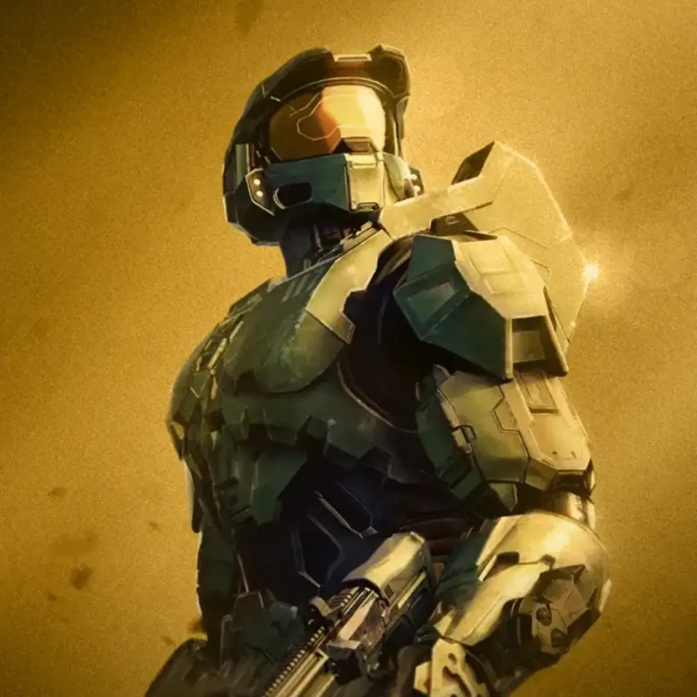
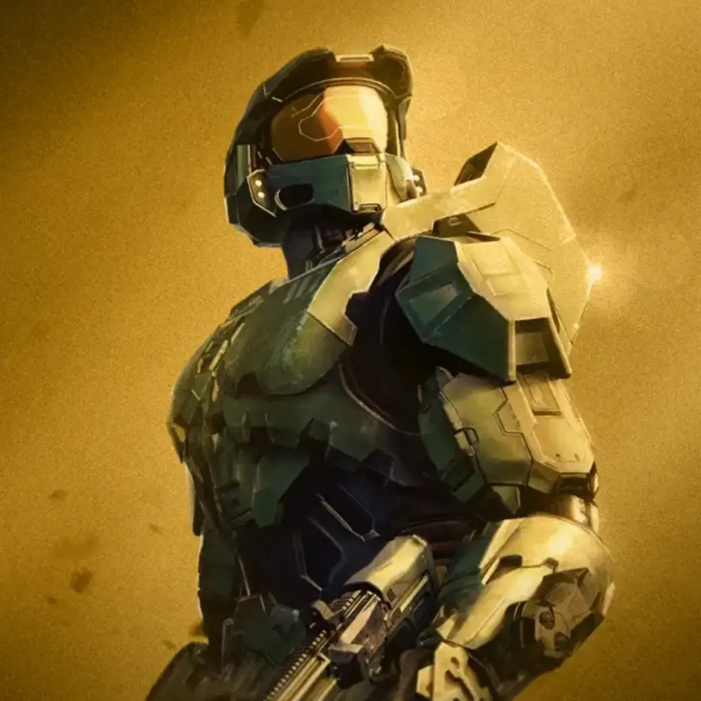
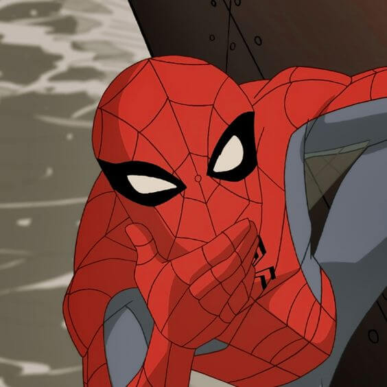
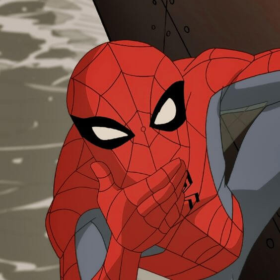

 



Opinión Película Resident Evil: El huésped maldito
No puedo decir si como adaptación es buena ya que no conozco los vídeo juegos y me chupa un huevo, pero crecí con esta película y la verdad la amo ya que por este film conocí la franquicia. Es una película un tanto única ya que es algo distinto y que recuerda a una típica película de serie B. Es difícil de explicar, pero no tengo razón alguna para considerar esta película mala. Los efectos especiales, el maquillaje, la banda sonora de Marco Beltrami y Marilyn Manson y hasta Milla Jovovich son sensacionales. Esta es sin duda una de las mejores películas de Paul Anderson y Milla Jovovich y no puedo hacer nada mas que darle un 10/10.